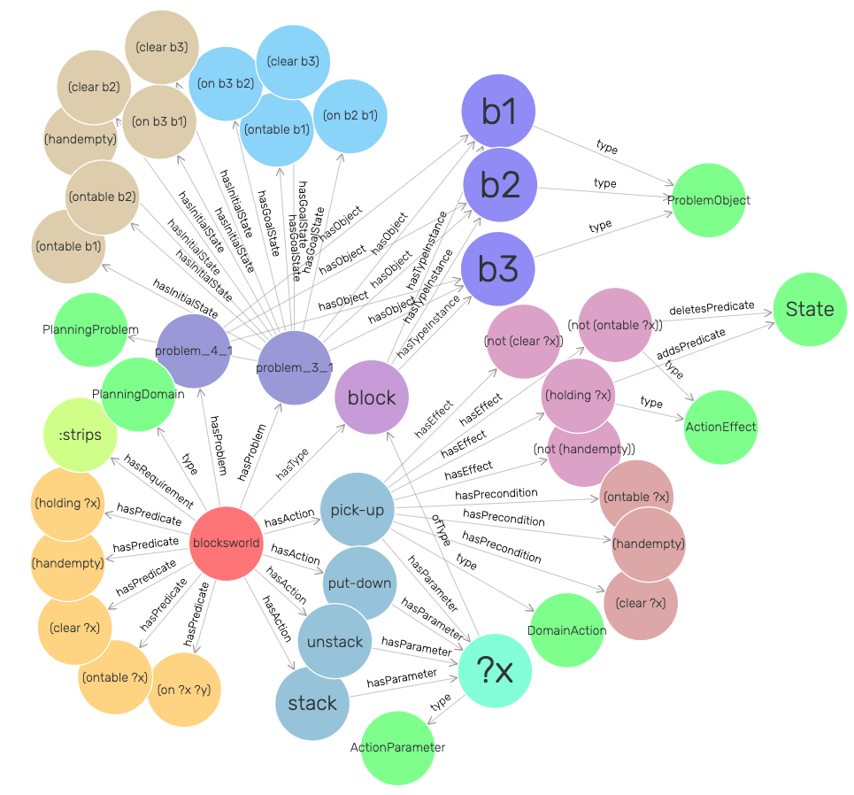

Single-Agent PO · Example
From PDDL to a Knowledge Graph
PDDL
→
RDF / OWL KG
→
SPARQL
An ontology instanceDomain, problem & plan files become a knowledge-graph instance of the ontology.
Typed nodes & edgesDomains, actions, predicates, objects & plan steps become typed nodes; relations become object properties.
Performance metadataIPC planner results are attached, enabling semantic queries — shown here for Blocksworld.
